How To Paint Everything: Space Wolves Space Marines (Updated September 23, 2026)
This article is part of a larger series on how to paint Space Marines. To return to that series, click here.
Changelog
- Update (Latest): 2026-09-23 Updated to include reference photos including the names of colors used.
- Update: 2025-05-03 Format streamlined.
- Published: 2023-12-26
Covered in This Article
- How to paint Space Wolves, with several different approaches for painting the faction's blue-grey armor.
- Notes on Space Wolves Heraldry, and tips on how to paint it.
- How to paint key elements of the Space Wolves, from frost axes to wolf pelts.
The Space Wolves are a proudly non-Codex-compliant chapter, with their primarch Leman Russ having been adamantly opposed to the sundering of his legion following the heresy. The Wolves instead split into a series of great companies, and have only recently begun to have successor chapters. As such, Space Wolves have some complex and non-traditional heraldry that can add a lot of visual interest to your models.
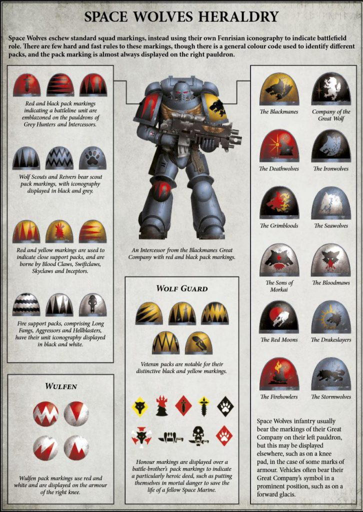
Credit: Games WorkshopOf particular note is that rather than a chapter emblem on their left shoulder pad, Space Wolves wear the insignia of their Great Company. While 99% of the painted models you'll see bear the yellow and black of Ragnar Blackmane, keep in mind that you have a lot of other options. These functionally act like companies for the Space Wolves but in practice act more like chapters in their own right.
Space Wolves use a number of special markings to mark their packs (squads), with the colors used to denote the battlefield role. Red and black denote Grey Hunters/Intercessors/Battleline units; Wolf Scouts and Reivers are marked in grey and black, assault and close support units are marked in red and yellow, and devastator/fire support units are marked in black and white. Wolf Guard and veterans are marked in yellow and black. Finally, Wulfen are marked in red and white.
Most of the Space Wolves' pack heraldry is marked with triangles or lines in some arrangement or another, so while there aren't really transfers for them, they're fairly easy to freehand - just lay down your outlines first, then paint the interior of the shapes.
Painting Space Wolves
Why paint Space Wolves instead of some other flavor of Space Marine? For one, they have a lot of material variety on their models that helps break up the normal Space Marine armor. Bone and Fur are particularly common, and the latter is a very fun thing to paint, with a lot of room for creativity and interesting patterns. Frost weapons are another cool reason, as they can make for an eye-catching and striking effect. They also have the best beards in the Space Marine range, so we must take that into account.
Space Wolves miniatures are different from other Astartes models in that they can often feature a ton of wolf pelts and fur details to paint.
Alfredo: Fur is a big characteristic of Space Wolves models, so it's worth taking care when painting it and going beyond the typical "basecoat one color, then wash, then drybrush" approach you sometimes see. It is nevertheless relatively simple and forgiving to paint, even with a more complex approach.
- First things first, I put every color on my palette. I tend to wet-blend my fur, which isn't as difficult as it sounds. For this pelt, I chose to go from pure black to dark brown all the way to a light khaki. At a minimum, use three colors, but I used five (black, dark brown, lighter brown, reddish brown and a light khaki).
- Then decide what your overall pattern is going to be. I mostly wanted to go from dark to light, from the center outwards, with the black being reserved for the back and the socks.
- I used two of the darker colors and three of the lighter colors, applying every color while the previous one was still wet, and feathering the transitions to blend everything together.
- After the basecoats, I drybrushed various areas, a dark blue-grey for the darkest areas and then lighter colors for the lighter areas (Vallejo Iraqi Sand and Pale Sand). I then mixed up a dark brown wash (Agrax Earthshade is fine) and applied that liberally to help unify everything further.
TheChirurgeon: Unique to the Space Wolves are frost weapons, basically replacing power weapons on some of their models with weapons that are multifaceted. These are, on the whole, easier to paint than standard power weapons, because most of the work you do on them goes into the edge highlighting process.
Here are the basic steps I use:
- Basecoat the weapon blue. You can use Contrast for this, but I used Warhammer Altdorf Guard Blue for my basecoat. You can wash this a bit with Warhammer Drakenhof Nightshade in the lower/recessed areas.
- Blend Highlighting. Blend that up to a lighter blue. In my case, I used Reaper Snow Shadow, but I'd also Warhammer Lothern Blue is another solid option.
- Edge Highlights. The final step is to do the edge highlights. I did this with Reaper Ghost White, and you can add an extra touch by doing spots of pure white on the most raised edges.
Haldor was a very fun model to paint with a variety of materials and a fun, dynamic pose. As usual, I went for a clean ‘Eavy Metal look but decided to alter the color scheme somewhat.
Going in, I decided I didn't want to do the typical baby blue armor scheme for Space Wolves. I've seen people do the Heresy Scheme on Primaris before, and liked that, but I wanted something in between. So I settled on a dark blue-grey for my primary armor color: Scalecolor Anthracite Grey.
I also decided I didn't want to go with yellow as my spot color, but something darker, and decided on desaturated brown-red, leveraging Vallejo Model Color Cavalry Brown and Hull Red. I went with a heresy-style set of markings, insignia and trim.
Everything else was fairly standard; I wanted a reddish gold to contrast with the grey-blue of the armor so I chose Scalecolor Viking Gold. My two other areas of spot color were going to be the frost axe and the weapon handles. Since the axe was going to be a greenish-blue, I went with orange-y leather for the weapon handles, using Vallejo Model Color Red Leather.
The General Process
I followed my usual general process for this one:
- Assemble
- Prime
- Airbrush the armor.
- Hand paint everything else.
- Gloss coat, then apply oil washes.
- Matte coat, then edge highlight.
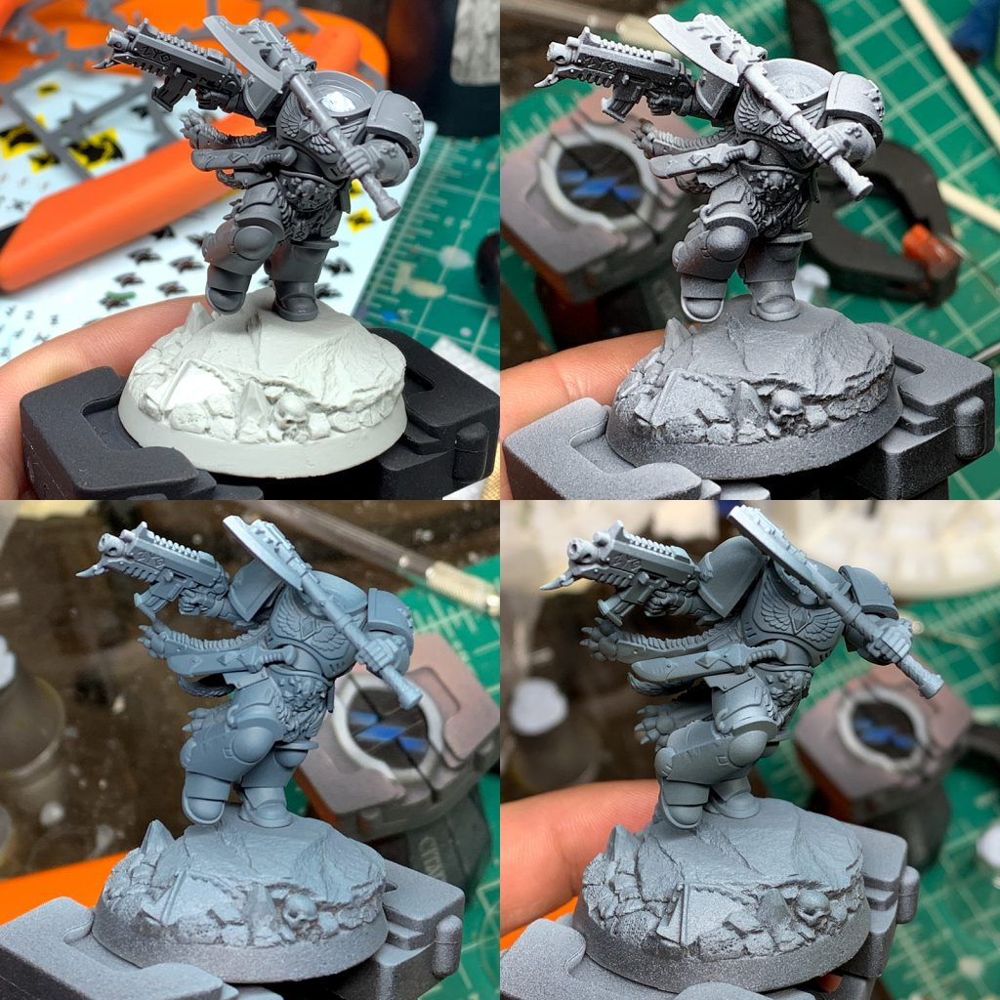
Haldor Icepelt WIP Credit: Alfredo RamirezAssembly, Priming and Basecoating
- As you'll see below, while I primed the model mostly assembled, it's actually held together by Blue Tack. I actually kept almost everything separate, including the torso and legs, so that I could more easily paint the inside of Haldor's pelt. I still like to prime assembled so I can get highlights and shadows where they are supposed to be.
- I primed with a standard zenithal, going from black to grey.
- The main armor basecoat was many thin layers of Anthracite Grey. I then applied sparing highlights of Arctic Blue using the airbrush.
- To create some additional contrast, I then sprayed the model from below with Sepia Ink, which contrasts quite a bit with the blue grey.
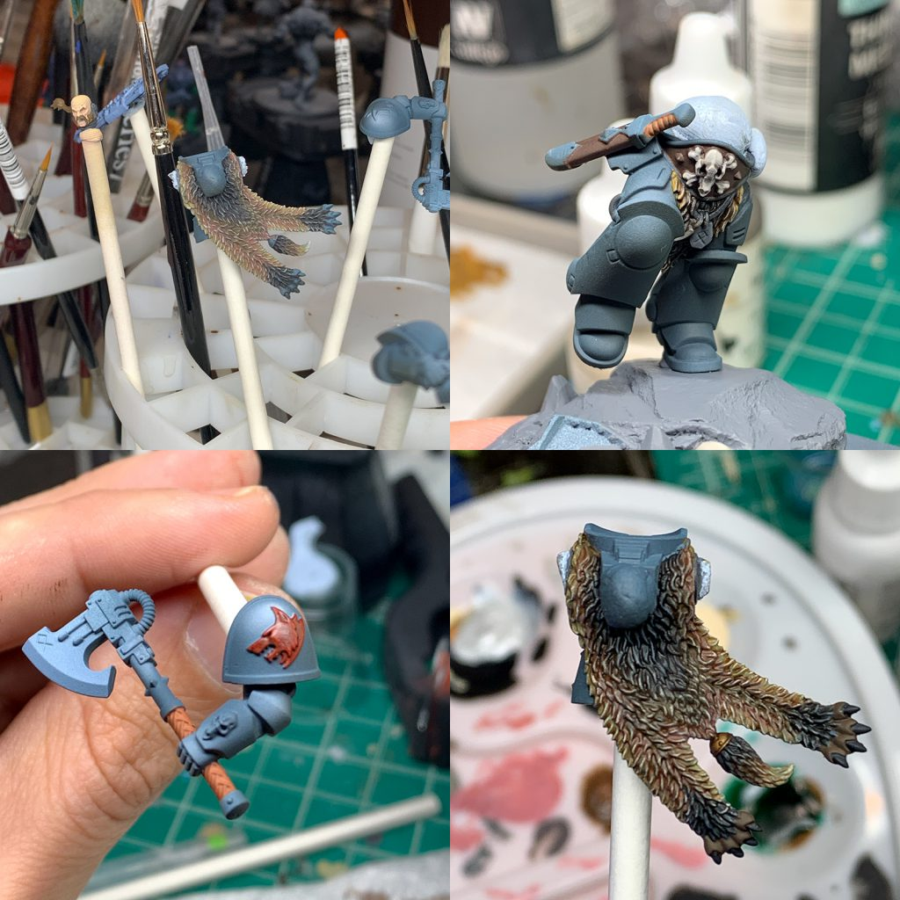
A Note on Fur
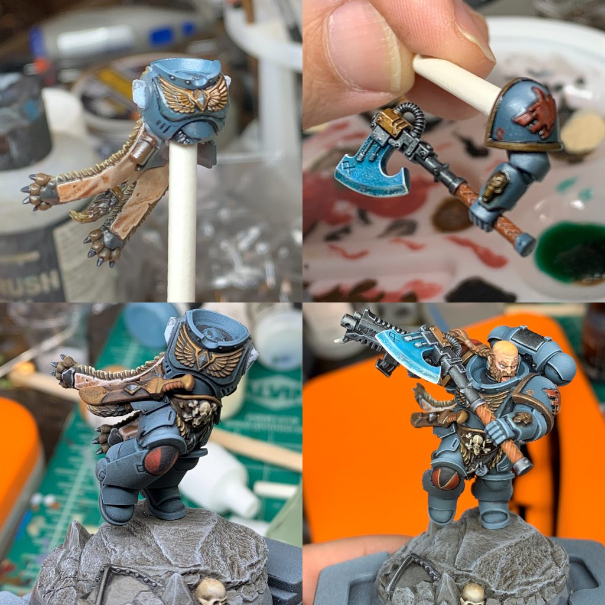
The Frost Axe
The axe is mostly just a lot of washes. I base-coated with a very light blue-grey and then hit it with Akhelian Green Contrast paint. After that, I applied a blue and a green wash (saturated blue, like Guilliman Blue Glaze* and dark green like Athonian Camoshade). Finally, I drybrushed the whole thing white.
Edge Highlights
People often tell me my paintjobs are very "clean", which sometimes confuses me when I've done a weathered model, but that really all comes down to neat edge highlights. So get a pointy brush and some thin paints and have at it.
The armor highlights are of course the most important; for them I used Scalecolor Bering Blue and Arctic Blue, which helped create some really sharp definitions.
For the red, I highlighted it with a desaturated ochre, and this included the markings on the shoulder and knee to help really pop the patterns out.
Final Details
To finish off the model, I used Valhallan Blizzard to add snow to the base and also to add an ice effect to the frost axe. I coated both of those areas in gloss varnish afterwards to up the shine.
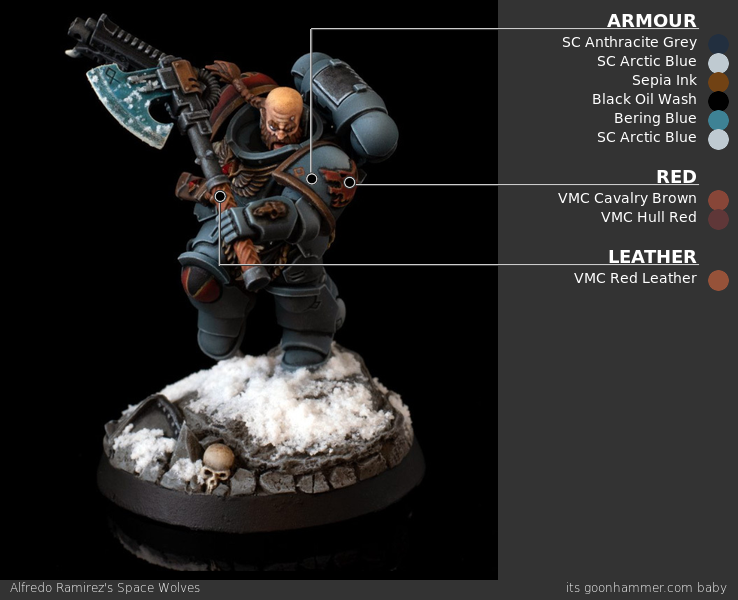
I don't really play Space Wolves myself, but I've painted more than a few wolves in my time, both for my Deathwatch and for my friend SD47. This particular model was painted just for this article with an updated version of the scheme I used for Krom.
Step 1. Undercoat
I started by priming the model with Warhammer Grey Seer primer, though if you're interested in doing a proper zenithal undercoat, doing Mechanicus Standard Grey first and a zenithal hit of Grey Seer is a good way to do it. After that, I painted the model with a couple of thin coats of Warhammer The Fang.
Step 2. Basecoat
If I were doing pre-heresy Wolves, I might stop with the Fang, or do a less blue-grey colour, but I need something lighter, so next I do a coat or two of Reaper Snow Shadow over the Fang, and blend it in areas where I need some darker tones.
Step 3. Blending and Washes
This is where I do any additional blending and start to apply some washes. I use Warhammer Drakenhof Nightshade to do washes in all the major recesses and then use Snow Shadow to clean up any edges where I go over.
Step 4. Additional Basecoats
Time to start hitting the other parts of the model. I hit the metal parts with Warhammer Leadbelcher while the gun gets coated in Warhammer Black Legion contrast paint. The aquilas I paint with Warhammer Retributor Armour gold paint, and I'll hit the eyes with Warhammer Mephiston Red and a highlight of Warhammer Evil Sunz Scarlet.
Step 5. Shoulderpads
The shoulder pads need their own colors. I do the left shoulder pad with Warhammer Averland Sunset and then blend that up to Warhammer Flash Gitz Yellow. The right shoulderpad is painted Warhammer Mephiston Red, shaded around the edges with Warhammer Carroburg Crimson, and then blended up to Warhammer Evil Sunz Scarlet.
I will also freehand the shoulder markings. This is done with Warhammer Black Legion Contrast paint. You start by carefully drawing the outline of where you want your scar patterns to be, then just paint inside those lines. If you want to get fancy, you can highlight those areas with some Warhammer Corvus Black.
Step 6. Washes and Highlights
There are quite a few parts to this stage, but they're all pretty simple. The metal and black bits are shaded with Warhammer Nuln Oil. I'll highlight the gun with a bit of Warhammer Corvus Black, then edge highlight it with Warhammer Mechanicus Standard Grey.
The gold parts are washed with Warhammer Agrax Earthshade, then highlighted with Warhammer Retributor Armour again.
Finally, there are the edge highlights - I hit pretty much the entire model with edge highlights of Reaper Ghost White, a nice, very light off-white which goes well here without being as overpowering as pure white.
And that's it! This guy was on the whole pretty easy to paint and I'm very happy with how he turned out.
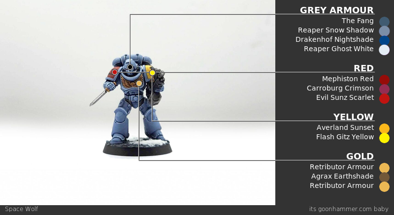
Bonus: Krom Dragongaze
This particular model was a gift for SD47 when he started playing Space Wolves. I really liked the Krom Dragongaze model and used it as an excuse to paint one up. Color-wise, I tend to go with lighter tones for the Space Wolves I paint. Krom's a pretty complicated model with a lot going on, but I ended up using only a handful of colors when painting him.
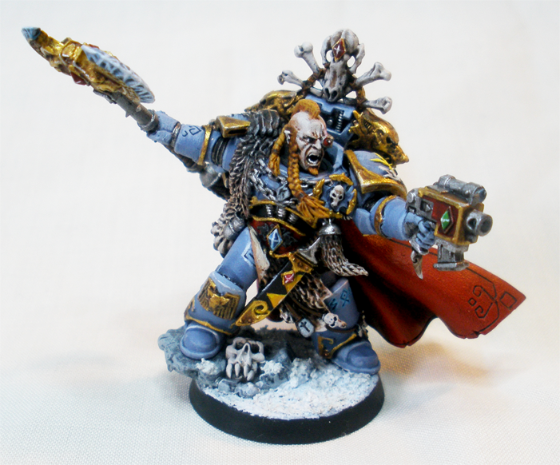
Credit: Robert "TheChirurgeon" JonesThe Armor Basics
I primed the model black and then basecoated the armor with The Fang, doing two thin coats. From there I did a coat of Reaper Snow Shadow, doing some blending with The Fang where I wanted the armor to be a bit darker. The final edge highlights are done with Reaper Ghost White, a very light bluish off-white. For the gold trim, my current method is to base coat with Retributor Armour, then wash with Agrax Earthshade, touch up with Retributor Armour again, and then edge highlight with Runefang Silver.
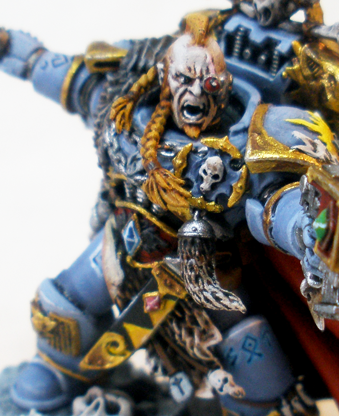
Credit: Robert "TheChirurgeon" JonesAdding Details
The Wolf Peltsare base-coated with Warhammer Dryad Bark, then I drybrush them in progressive layers with Warhammer Mournfang Brown mixed with increasing amounts of Reaper Polished Bone. The Gemstones are Warhammer Altdorf Guard Blue washed with Warhammer Drakenhof Nightshade and highlighted along the edges with Reaper Snow Shadow and Ghost White for the blue, while the red are Warhammer Mephiston Red washed with Warhammer Carroburg Crimson and edge-highlighted with Reaper Pure White mixed with a little Warhammer Mephiston Red.
The Bones and Bone Details are painted with a base layer of Warhammer Rakarth Flesh, then washed with Warhammer Agrax Earthshade before I go back over and pick out the raised details again with Rakarth Flesh. Then I pick out the final details with Reaper Polished Bone.
Krom's Hair was painted with a base coat of Averland Sunset and then washed with Carroburg Crimson to give it a redder hue. Then I went back and painted the raised areas with Averland Sunset again to give it that blonde look. The Cape is just Mephiston Red as a base washed with Carroburg Crimson; then I work up from that in layers, mixing Carroburg Crimson with Mephiston Red to get a more gradual color transition, and highlight with a little Evil Sunz Scarlet.
Credit: Robert "TheChirurgeon" JonesThe Frost Axe is Altdorf Guard Blue washed with Drakenhof Nightshade and then highlighted with Reaper Snow Shadow and Reaper Ghost White along the very edges.
I’m back once again, this time to relive the joys of my very first army that I started collecting and playing all the way back in 93, with the joy of lead models and plastic arms that always fell off. The young Bean cared little for painting, as you can see here.
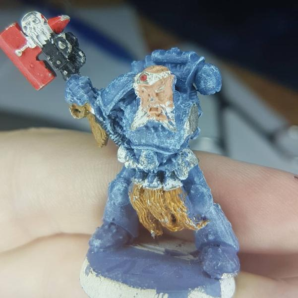
Beanith's first attempts - Space Wolf Long Fang, 1993I tried painting some of them, but I soon found I didn't enjoy paint, so I quickly fell to the Dark Grey Horde side. Since then, many winters have passed, and then Contrast came and brought me back into the Light, and I found I actually enjoy the time spent painting in the evenings and the pride in having a painted army to face off against my friends. All that aside, here is my quick and fast Contrast method for churning out those Troops you’ll want to carry Ragnar to Victory!
- Strip all of your Iron Hand Primaris Marines
- Undercoat the models with Grey Seer Primer
- Smoosh on a coat of Space Wolf Grey Contrast and then wonder if you should do a second coat.
- Post on Insta and feel slightly put upon when they all agree the second coat looks better.
- Smoosh on a second coat of Space Wolf Grey Contrast and agree.
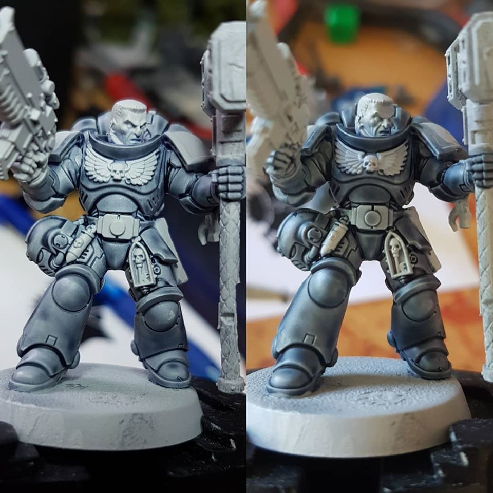
Beanith's choice - One Coat Two Coat
- Clean up the shoulder pads, chest and right knee pad with Grey Seer.
- Praise Duncan for the magical Iyanden Yellow Contrast and apply it to the left shoulder and right knee.
- Blood Angels Red Contrast on the right shoulder pad and dabbled into the helm’s eye sockets.
- Snakebite Leather Contrast on the pouches.
- Skeleton Horde Contrast on the chest birdie, gun birdie and fancy ribbon.
- Freehand a pack mark on the right shoulder pad with Black Templar Contrast and do a ham-fisted job of it. But don’t worry, we’ll hide our shame with model positioning in the photo.
- Finish up with Black Templar Contrast and Basilicanum Grey Contrast on the gun.
Bosh, one Intercessor that could be awaiting transfers and base details, but in my case, counts as ready for the tabletop… after the isolation ends, so get back there and finish the other 14-29 that you’ll want.
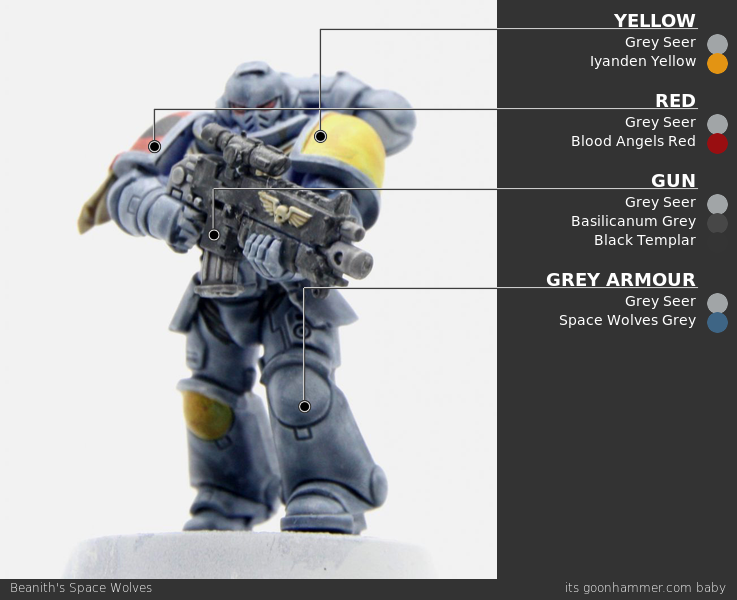
The Space Wolves were my first army, which started way back in 3rd edition. After years of growing as a painter, there was a noticeable difference between the first models I painted and the last. I felt the army needed a restart. So, I spent a few weeks stripping the paint off all my models and was ready to start the process all over again. I knew I wanted a different look than the GW powder blue. I started to see more and more examples of their 30k color scheme making its way onto 40k models, and I loved the look. I also saw some examples of how painting their weaponry red contrasted this darker armour choice very well. Let’s not forget the distinct yellow shoulder pad that screams Space Wolves and the snow base for these Fenrisian warriors to finish the model off.
The Process: base, wash, highlight.
Armour
- Base the entire model with Army Painter Uniform Grey
- Wash armour with Tamiya Panel Line Accent Color Black
- This stuff is the real deal. If you haven’t used it for a wash yet, check out a YouTube video to watch how easy it is to get amazing results
- Using Warhammer Nuln Oil works just as well
- Touch up any over-wash with Army Painter Uniform Grey
- Highlight with Warhammer Dawnstone
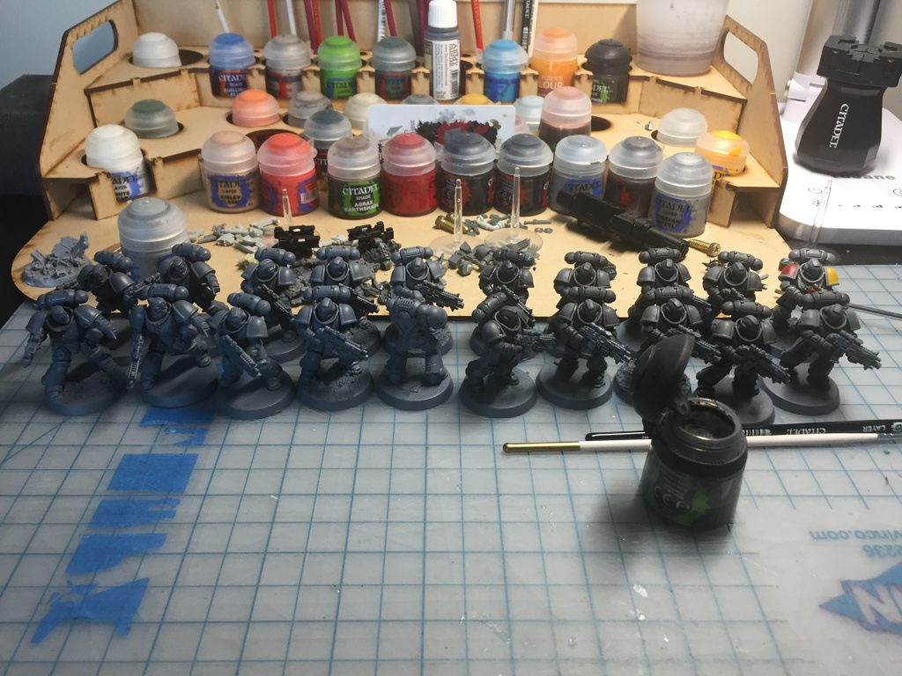
Credit: Nick KaszaBreastplate
- Base with Warhammer Ulthuan Grey
- Wash with Warhammer Agrax Earthshade
- Highlight with Warhammer White Scar
Gun – Metal
- Base with Warhammer Leadbelcher
- Wash with Warhammer Nuln Oil
- Highlight with Sharpie – Silver Metallic
- Yeah, I said it, it couldn’t be easier to use and looks great!
Gun – Body + Eyes
- Base with Warhammer Mephiston Red
- Wash with Tamiya Panel Line Accent Color Black
- Highlight with Warhammer Wild Rider Red
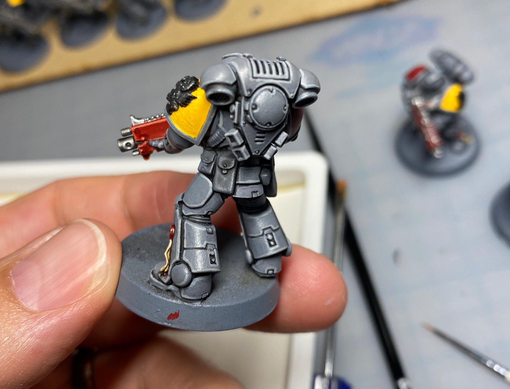
- Base with Warhammer Averland Sunset
- Layer with Warhammer Yriel Yellow
- Base shoulder pad icon purchased from Shapeways Marketplace with Warhammer Abaddon Black
- Apply shoulder pad icon
Right Shoulder Pad and left knee
- Base with Warhammer Mephiston Red
- Wash with Tamiya Panel Line Accent Color Black
- I used a black felt pen to outline the design and filled it in with Warhammer Abaddon Black
Leather
- Base with Warhammer Snakebite Leather Contrast
Base
- Break apart some cork tiles and glue onto their base
- Prime the whole base with Black
- Drybrush with Warhammer Administratum Grey
- Apply Warhammer Valhallan Blizzard
- Apply The Army Painter – Frozen Turf grass
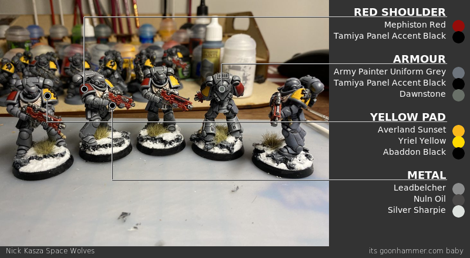
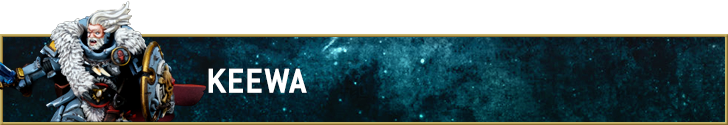
My recipe for the grey-blue power armour of the Space Wolves goes like this:
- Airbrush prime with Molotow Petrol.
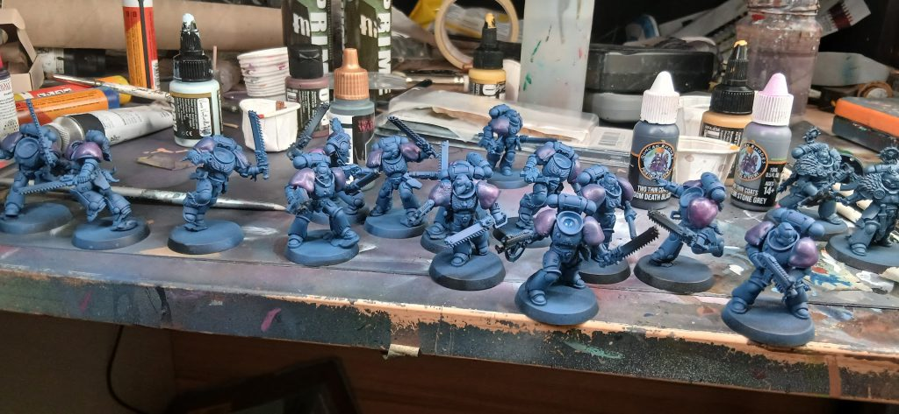
- Everything but the deepest recesses was covered with Army Painter Air Iron Wolf, applied with the airbrush.
- Sprayed from a 45 degree angle with Army Painter Air Wolf Grey
- Sprayed from directly above with Pro Acryl Grey Blue
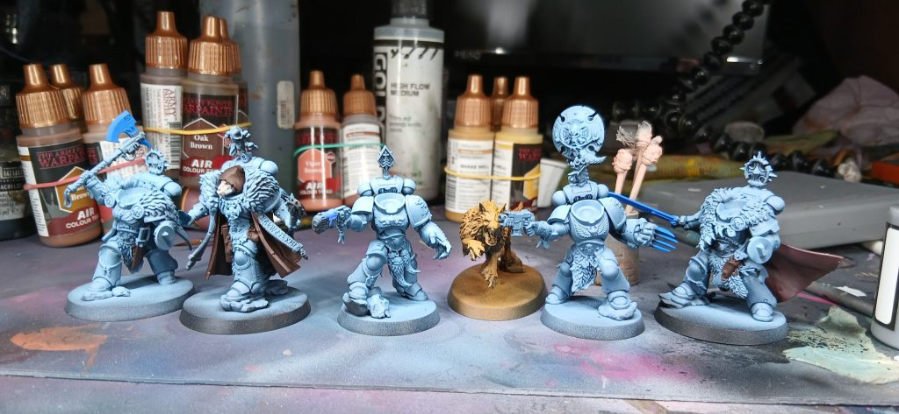
- Once all the other details were basecoated and the decals applied, the whole miniature was gloss varnished before being shaded with a Payne's Grey oil pin wash applied carefully into the recesses to provide some very nice blacklining and panel separation with limited effort. Once the white spirit had evaporated away, I wiped the excess oil away from the flat panels with some make-up sponges. If you want a greyer Wolf, Black oil also works, and honestly, in some parts I probably should have used it rather than the Payne's Grey - which can be a bit too blue and colourful. Oh well, we live and learn.
- Once the oil was cured, the entire model received a coat of ultra-matte varnish, followed by the application of various paints: Army Painter Air - Storm Wolf, Scalecolor Artist Sky Blue, with ProAcryl White Blue used on the sharpest edges and corners.
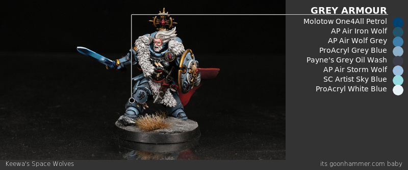
Looking at the graphic, it might seem like this armour takes forever because there are so many steps involved, but it's really not as bad as all that. The first four steps took maybe 45 minutes for 25 or so Space Marines. It would definitely have taken longer had I painted each of those layers with a normal brush, but in this case, the airbrush is key: a massive speed boost and a nice, smoothly blended finish. Bonus!
Final Thoughts
Space Wolves are a fun interpretation of the "savage, but honorable" warrior trope, and this translates into miniatures that tend to be very dynamic, with lots of interesting materials to paint aside from grey ceramite.
Have any questions or feedback? Drop us a note in the comments below or email us at contact@tabletopbattles.com. Want articles like this linked in your inbox every Monday morning? Sign up for our newsletter. And don't forget that you can support us on Patreon for backer rewards like early video content, Administratum access, an ad-free experience on our website and more.
This article is part of a larger series on how to paint Space Marines. To return to that series, click here.
Originally published on Goonhammer.


{kind=link}
{kind=link}
{kind=link}
{kind=link}
{kind=link}
{kind=link}
{kind=link}
{kind=link}
{kind=link}
{kind=link}
{kind=link}
{kind=link}
{kind=link}
{kind=link}
{kind=link}
{kind=link}
{kind=link}
{kind=link}
{kind=link}
Leave a Comment